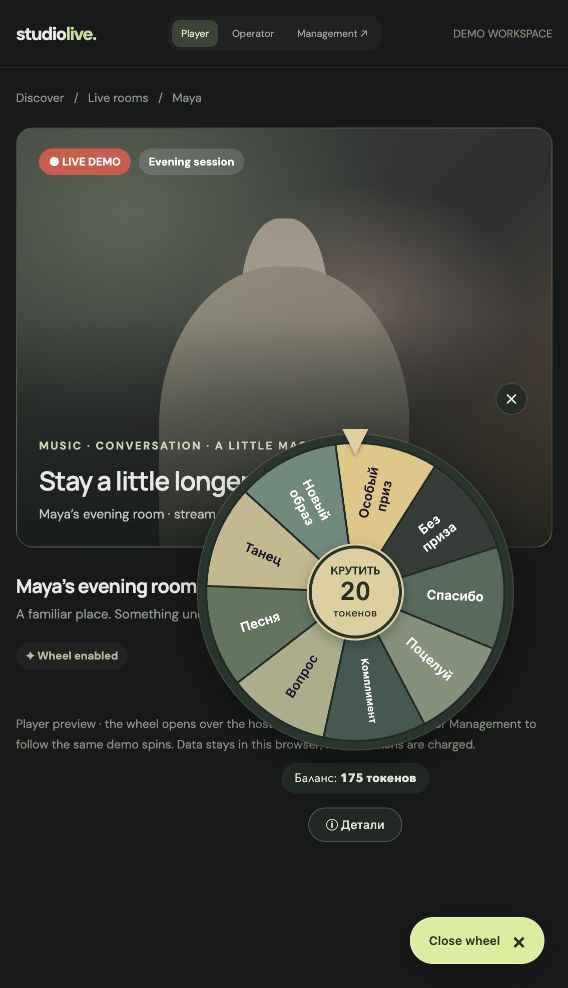
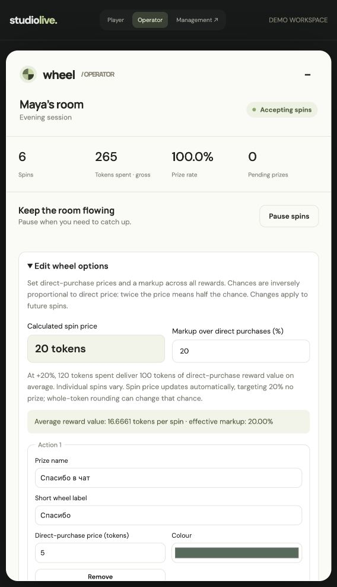
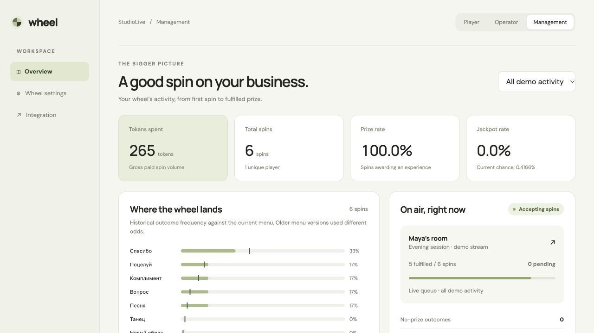

Try the player overlay, run the stream, and inspect the results. These static demos share one browser-local ledger on the same origin.
Compare seven audiences, inspect demand curves, and replay a stream with finite action capacity. Apply a recorded offer to the player preview.
Open interactive experiment ↗Transparent wheel, visible balance, optional details and a no-prize outcome.

Action prices and overhead determine spin price and chances automatically. Fulfil or refund queued prizes.

Gross spend, refunds, prize frequency, version history in spin records, and CSV export.

This calculator uses the same function as the operator panel. Editing these examples does not change the active wheel or wallet.
Inverse-price chances; a 20% no-prize target sets the automatic spin price. Whole-token rounding changes the actual no-prize rate. Overhead is across aggregate reward value, not guaranteed spending for a particular reward or business profit.
Calculation and implementation notes ↗Screenshots show illustrative local demo activity. A new browser starts with an empty ledger and 400 demo tokens. No accounts, real payments, cash prizes or backend services are connected.